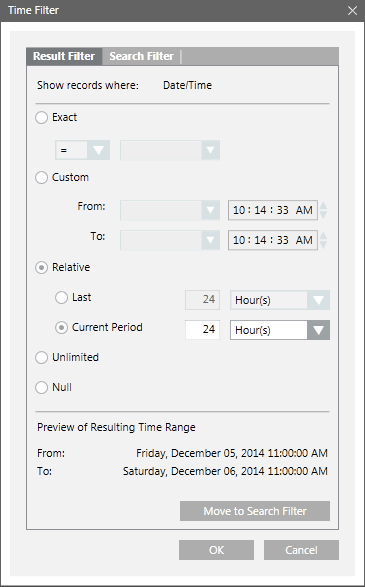

Custom Filter
A custom filter allows you to define a filter expression from which you can filter data according to your specific requirements.
Custom Filter Condition
A custom filter condition is composed of:
- Column name (Condition Name)
- Operators
- Condition value
Examples of Custom Filter Expressions
The following list contains some valid custom filter expressions:
Event Category = "Life Safety"
Event Category = {“Status”; “Life Safety”; “Supervisory”}
The custom filter also allows you to create complex filters and conditions using mathematical and logical operators, and wildcard characters.
The following operators are supported:
Mathematical Operators | |
Enum Columns | Equal to (=), Not Equal to (<>) |
Numeric Columns | Equal to (=), Not Equal to (<>),Less than (<),Greater than (>),Less than Equal to (<=),Greater than Equal to (>=) |
Text Columns | Equal to (=), Not Equal to (<>), IN (←) |
Variant Columns | Equal to (=), Not Equal to (<>),Less than (<),Greater than (>),Less than Equal to (<=),Greater than Equal to (>=),IN (←) |
CNS Columns | Equal to (=) |
View Specific Columns | Equal to (=) |
Logical Operators | |
AND | Applying the custom filter expression on multiple columns. For example, 'Discipline' = "Building Automation" AND 'Subdiscipline' = "Access Control" |
OR | Applying the custom filter expression on the same column. For example, 'Discipline' = {"Building Automation";"Energy Management"} |
- Wildcard Character: Asterisk (*)
List of ENUM columns
- Subtype
- Type
- Subdiscipline
- Discipline
- Record Type
- Action Result
- Event Mode
- Event Category
- Event State
- Log Type
- Action
- Quality
- Previous Quality
Custom Filter Syntax
To create a custom filter, you must know the data type of the column for which you want to apply the filter.
The following examples should help you create custom filters without syntax errors.
- If column displays text data, for example string or enumeration, then the value must be enclosed within double quotes.
- ‘Source Description’ = “Analog Output 1”
- ‘Event Mode’ = “Normal”
- 'Value' = "True"
- 'Previous Quality' = "#COM"
- ‘User’ = “[DomainName]\\[UserName]”
- If column displays date time value, then the value must be in date time format configured in Windows on the server.
Date must be in the short date format, time in the long time format (24 hours). - ‘Date/Time’ = 3/13/2014 16:04:25 (assuming that the date format on the server is M/D/YYYY)
- 'Value' = 07/24/2014 11:52:00
- If column displays boolean data, such as TRUE or FALSE, the value must be enclosed in double quotes.
- 'Previous Value' = "True"
- ‘Value’ = “False”
- If column displays numeric data, for example, 54.11, 25, -20, and so on, then the values must be specified as follows:
- 'Value' = 54.11
NOTE: The decimal separator must be according to your Windows Regional and Language settings. - If column displays bit string, then the value must be enclosed in double quotes.
- ‘Quality’ = “Out of service”
- Specify time values in a 24-hour clock format. For example, to specify the Source Time as 2.00 PM, type 14.00.
Types of Custom Filters
There are two types of custom filters that are applied to the log data:
Result filter: The result filter enables you to filter data from the displayed data set in the log view. You cannot save a result filter condition.
In order to save the filter condition, you must move the result filter to a search filter and then save the configuration as a log view definition.
You can apply a result filter from the Custom Filter dialog box, Quick filter, Selection filter, and using drag-and-drop.
Search filter: The search filter enables you to obtain the data matching the filter expression from the database.
Any modification or addition to the search filter, refreshes the log view automatically, so that all the data matching the search filter is obtained from the database.
To preserve the search filters, you must save the settings as a log view definition. Using the search filter, you can filter the data for the columns that are present in the log view.
You can also apply a search filter if you need to filter the data for a column that is not present in the log view.
The combined search filter is always available in the Search Filter dialog box.
For example, you can apply a result filter on the log data to retrieve all records with Source Description as "Analog Input 1".
However, in order to save the filter condition, you must move the result filter to a search filter.
Custom Filter Dialog Box - For columns other than date/time
The Custom Filter dialog box allows you to define result and search filter expressions on a particular column. You can access this dialog box by either:
- Clicking the drop-down arrow on a column heading displaying non-date/time values and selecting Custom Filter.
- Right-clicking a log view entry displaying non-date/time data and selecting Custom Filter.


NOTE:
You can view records for only those event categories for which you have Show rights. In the absence of Show rights for any of the event categories, only Activity type records display.
Custom Filter Dialog Box Components | |
Name | Description |
Result Filter | Allows you to specify a result filter. |
Search Filter | Allows you to specify a search filter. |
Operator | Lists the mathematical operators. The list of operators displayed in this box depends on the column type. |
Value | Allows you to specify values. Depending on the column type, you can either select a value from the drop-down list or enter a value in the text field. |
Add Filter | Adds a new filter expression row with the Operator and Value fields to the Custom Filter dialog box. |
Remove Filter | Removes the filter set on the particular column. |
AND | This is a logical operator that allows you to combine filter expressions and create complex filters. This button is available only when you add a new filter expression row and select the check boxes preceding the Operator drop-down list in the filter expression rows. |
OR | This is a logical operator that allows you to combine filter expressions and create complex filters. This button is available only when you add a new filter expression row and select the check boxes preceding the Operator drop-down list in the filter expression rows. |
Move to Search Filter | Displays only when the Result Filter tab is selected. Allows you to move the result filter to a search filter. |
Filter expression field | Displays the filter expression. In case of multiple filter expressions, the OR operator is applied by default. |
Time Filter Dialog Box
This dialog box allows you to define result and search filter expressions on a particular date/time column. You can access this dialog box using any of the following methods:
- Clicking the drop-down arrow on a column heading displaying date/time values, positioning your cursor over Date Filters and then selecting Custom Filter.
- Right-clicking a log view entry displaying date/time data and selecting Custom Filter.

Time Filter Dialog Box Components | |
Name | Description |
Result Filter | Allows you to specify a result filter. |
Search Filter | Allows you to specify a search filter. |
Exact | Allows you to filter data based on the exact date specified. |
Custom | This option allows you to set the date and time as per your requirement. Selecting the Custom option enables the From and To fields. The To date should always be greater than From date. If the To date is less than the From date, then the To field is highlighted in red color and an error message displays when you move your cursor over the field. |
Relative | Relative has two options: Last and Current Period. |
Unlimited | Default selection. Allows you to retrieve all records. |
Null | Allows you to retrieve records with Null value. |
Move to Search Filter | Displays only when the Result Filter tab is selected. Allows you to move the result filter to a search filter. |
Preview of Resulting Time range | Displays the resulting time range for the options selected in the Time Filter dialog box. For example, if the present time is 08/07/2014 10.35 AM, then for the current 1 hour selection, the Preview of Resulting TimeRange displays the following: |